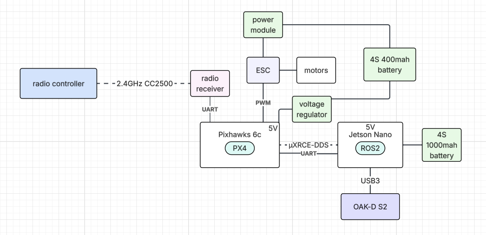

Autonomous UAV Platform
Project Description
This project originally started as an autonomous test drone but later became a drone kit designed to distribute to teams at a hackathon for autonomous GPS-denied navigation. The goal is to create a scalable hardware kit that other engineers can program to perform applications such as reconnaissance or navigation through a disaster site.
The platform has successfully passed initial hardware validation and currently supports manual radio flight, which is retained strictly as a hardware kill-switch for safety compliance. Current work is focused on the software stack. We aim to have two flight modes: offboard and autonomous.
System Architecture
Bill of Materials
| Category | Component |
|---|---|
| Compute | NVIDIA Jetson Orin Nano |
| Perception | Luxonis Oak-D Lite S2 |
| Flight Controller | Pixhawk 6C |
| Power Electronics | 45A 4-in-1 ESC |
| Power Electronics | PM02V3 Power Module |
| Battery | 4S 4000mAh LiPo — flight power |
| Battery | 4S 1000mAh LiPo — compute power |
| Propulsion | Brushless Motors, 1300kV (2807) |
| Propulsion | 7×3.5×2 Propellers |
| RC Control | RadioMaster Pocket |
| RC Control | FrSky R-XSR Mini Redundancy Receiver, 16CH SBUS/CPPM |
| Frame | Custom Carbon Fiber Frame |
Flight Stack
- PX4
- ROS2
- OrbSLAM
- MAVLink DDS
Block Diagram

Implementation
Thrust Calculations and Power Specs
Motor Sizing Requirements
Starting from the total drone mass and a design thrust-to-weight ratio, we determine the minimum thrust each motor must produce.
$$m_{\text{drone}} = 1.25\text{–}1.3 \text{ kg}, \qquad \text{TWR}_{\text{design}} = 3{:}1$$
$$F_{\text{req}} = \text{TWR} \times m_{\max} = 3 \times 1.3 \text{ kg}_f = 3.9 \text{ kg}_f$$
$$F_{\text{per motor}} = \frac{F_{\text{req}}}{4} = \frac{3.9}{4} = 0.975 \approx 1 \text{ kg}_f \text{ per motor}$$
Propeller Speed
The no-load RPM is estimated from the battery voltage, motor KV rating, and an assumed efficiency factor.
$$KV = \frac{\text{RPM}}{\text{Volt}}$$
$$\text{RPM} = V_{\text{battery}} \times KV \times \eta = 14.8\text{ V} \times 1300\tfrac{\text{RPM}}{\text{V}} \times 0.8 = 15{,}392 \text{ RPM}$$
Propeller Specifications
$$D = 7\text{ in} = 0.1778\text{ m}, \qquad p = 3.5\text{ in} = 0.0889\text{ m}$$
Effective Air Velocity
The propeller pitch gives the theoretical distance traveled per revolution, yielding the effective air speed through the disk.
$$v = \text{RPM} \times p = 15{,}392 \frac{\text{rev}}{\text{min}} \times \frac{1\text{ min}}{60\text{ s}} \times 0.0889\frac{\text{m}}{\text{rev}} = 22.8\text{ m/s}$$
Thrust per Motor
Using actuator disk / momentum theory, thrust is proportional to the disk area and the square of air velocity.
$$T = \frac{\pi}{4}\,D^2\,\rho\,v^2$$
$$= \frac{\pi}{4}\,(0.1778\text{ m})^2 \left(1.225\,\frac{\text{kg}}{\text{m}^3}\right)(22.8\text{ m/s})^2$$
$$= 20.14\text{ N}$$
$$T = \frac{20.14\text{ N}}{9.81\text{ m/s}^2} = \mathbf{2.053\text{ kg}_f \text{ per motor}}$$
Total Thrust & Margin
$$F_{\text{total}} = 4 \times 2.053\text{ kg}_f = \mathbf{8.21\text{ kg}_f}$$
$$\text{Actual TWR} = \frac{8.21}{1.3} \approx 6.3{:}1 \quad \Bigl(\text{well above the } 3{:}1 \text{ design requirement}\Bigr)$$
Radio
We chose the CC2500-based FrSky protocol for its compatibility with PX4. The radio was calibrated in QGroundControl to verify basic flight, but its sole operational purpose is to provide a manual kill switch for safety compliance.
Autonomous Algorithms
To implement GPS-denied navigation, we fuse high-frequency IMU data (internal to the flight controller) with low-frequency visual inertial odometry (VIO) from the camera. We configured the ECL EKF parameters in PX4 and created a ROS2 node that subscribes to the camera and publishes to the PX4 EKF using the MicroXRCE-DDS communication protocol.
For path planning, we created a node that executes the D* Lite algorithm. This node subscribes to the camera for obstacle detection and to the Pixhawk EKF2 for state estimation, and publishes the immediate next target vector.
The offboard control node subscribes to the path planning node and publishes the trajectory_setpoint, offboard_control_mode, and vehicle_command topics within PX4 to execute the planned path.
Challenges
Delivering a stable power supply to the Jetson proved difficult. Battery voltage sags whenever the motors are running, creating a risk of brownout to the onboard computer.
We first tried voltage regulators, but the only units capable of tolerating the Jetson's 5A peak draw did not work reliably under load. We ultimately settled on a separate, dedicated battery to power the Jetson exclusively. While this added weight, it guaranteed a stable voltage and smooth flight. The 1300kV motors produce roughly 8.2 kg of total thrust while the full platform sits at approximately 1.5 kg, so the thrust margin was sufficient to absorb the extra battery mass.